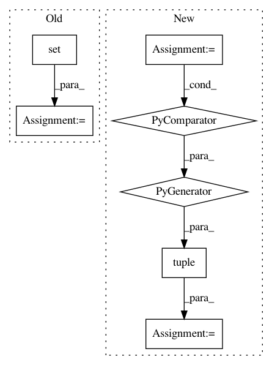

23f7a6de9a581d18a1fb87582f50b6efb72e7683,elfi/executor.py,Executor,get_execution_order,#Any#Any#,84
Before Change
nodes that require execution
nodes = set()
order = nx_constant_topological_sort(G)
dep_graph = nx.DiGraph(G.edges())
for node in order:
After Change
output_nodes = G.graph["outputs"]
// Filter those output nodes who have an operation to run
needed = tuple(sorted(node for node in output_nodes if "operation" in G.node[node]))
if needed not in cache:
// Resolve the nodes that need to be executed in the graph
nodes_to_execute = set(needed)
In pattern: SUPERPATTERN
Frequency: 3
Non-data size: 7
Instances
Project Name: elfi-dev/elfi
Commit Name: 23f7a6de9a581d18a1fb87582f50b6efb72e7683
Time: 2017-09-08
Author: jarno.lintusaari@aalto.fi
File Name: elfi/executor.py
Class Name: Executor
Method Name: get_execution_order
Project Name: pantsbuild/pants
Commit Name: 6229c419d8f1b63cac22f23f24e19ef28d89b0a3
Time: 2018-06-27
Author: dawagner@gmail.com
File Name: src/python/pants/backend/graph_info/tasks/cloc.py
Class Name: CountLinesOfCode
Method Name: console_output
Project Name: pantsbuild/pants
Commit Name: b4eb76c08f9e613275f4b6bba4d32c8cc1224cdc
Time: 2021-03-23
Author: 14852634+Eric-Arellano@users.noreply.github.com
File Name: src/python/pants/backend/python/dependency_inference/rules.py
Class Name:
Method Name: infer_python_dependencies_via_imports